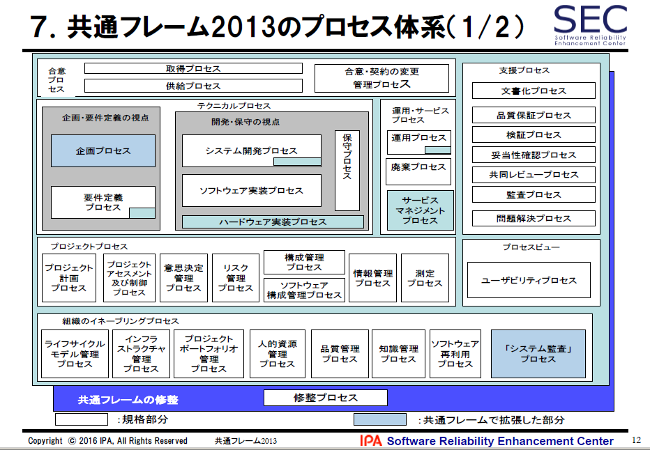
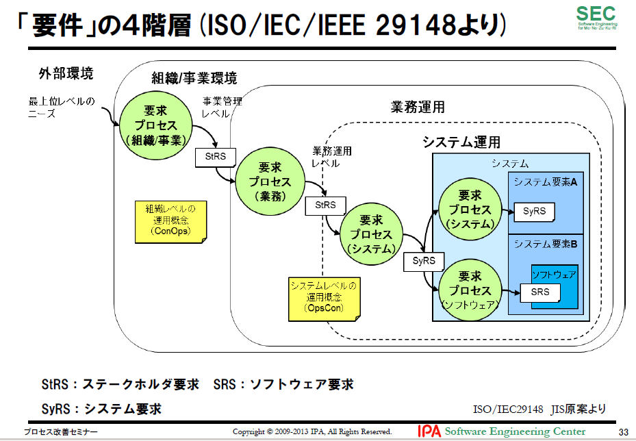
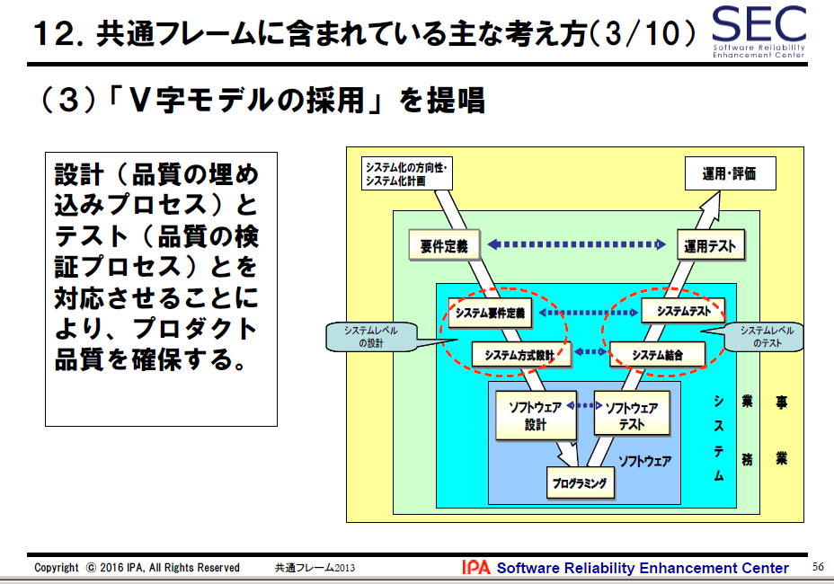
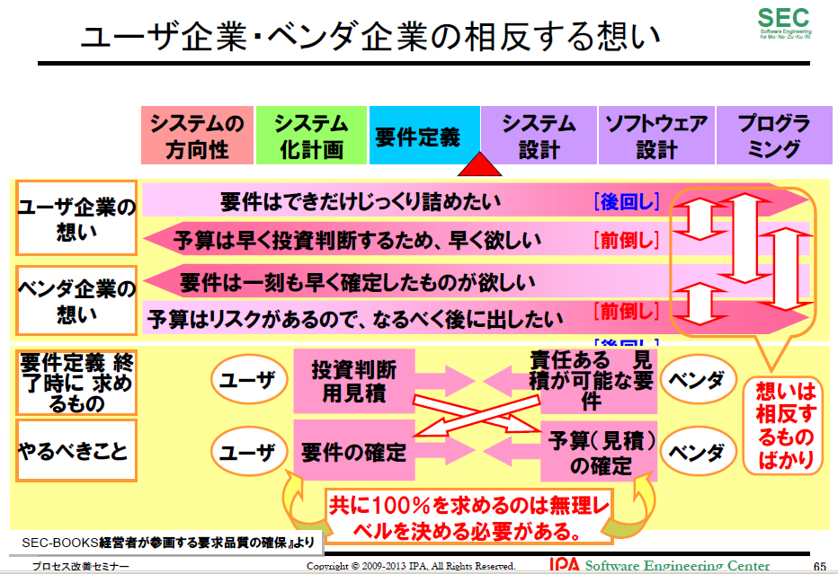
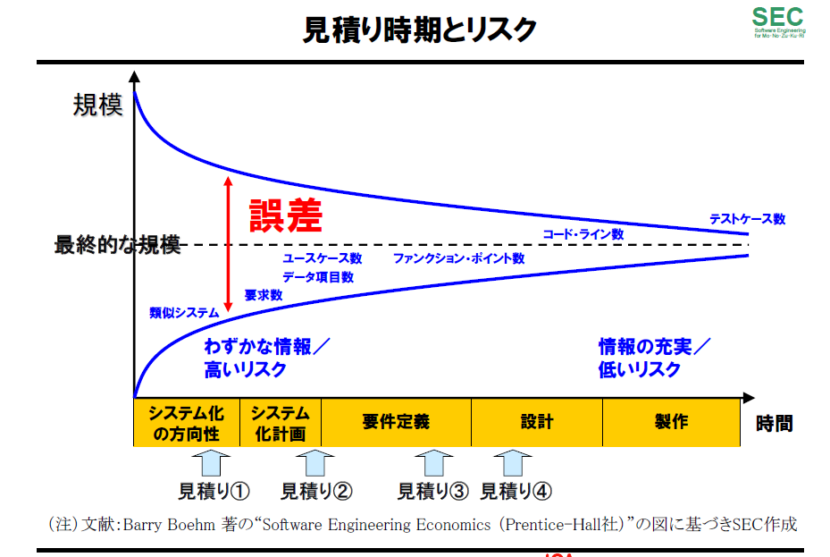
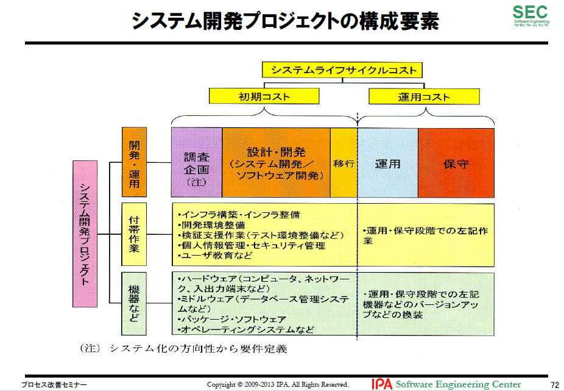

- Bib04-07 共通フレーム2013とユーザのための要件定義ガイド
- 【2018年7月30日】
- 共通フレーム２０１３解説【2016年1月IPA】
- 第１部共通フレーム2013の概要
- １．共通フレームとは
- ソフトウェアの構想から開発、運用、保守、廃棄に至るまでのライフサイクルを通じて必要な作業項目、役割等を包括的に規定した共通の枠組み。
- 何を実施するべきかが記述されている、「ＩＴシステム開発の作業規定」である。
- 目的は、ソフトウェア開発に関係する人々（利害関係者）が、「同じ言葉で話す」ことが出来るようにするため。
- ウォーターフォール、スパイラル、プロトタイプ、アジャイル系すべての開発方法論に共通したもの。
- ２．共通フレーム2013の経緯
- ３．なぜ、プロセスが重要なのか
- プロダクトの品質はプロセスの品質から
- プロセス :インプットをアウトプットに変換する，相互に関連する又は相互に作用する一連の活動（JIS Q 9000:2006）（処理する、加工する、手を加える）
- ４．共通フレームの特徴
- （１）超上流の重視
- （２）モジュール性の採用
- （３）責任の明確化
- （４）責任範囲の明確化
- （５）工程、時間からの独立性
- （６）開発モデル、技法、ツールからの独立性
- （７）ソフトウェアを中心としたシステム関連作業までを包含
- （８）システムライフサイクルプロセスとの整合性
- （９）文書の種類、書式を規定しない
- （１０）修整（テーラリング）の採用
- ５．共通フレームの構造
- プロセス とは、システム開発作業を役割の観点でまとめたもの。
- アクティビティ とは、相関の強いタスクをまとめたタスクの集合のこと
- タスク とは、アクティビティを構成する個々の作業のこと
- 注記 とは、タスクを構成する要素のこと。例示としている。
- ６．共通フレームとガイダンスの見方
- ７．共通フレームのプロセス体系
- 
- ８．「要件」の4階層【概要より引用】
- 
- ８．規定例-「5.1 プロジェクト計画プロセス」
- 目的：
- プロジェクト計画プロセスは，効果的で実行可能なプロジェクト計画を作成し，伝達することを目的とする。
- このプロセスは，プロジェクト管理及び技術的活動の範囲を決定し，プロセスの出力，プロジェクトのタスク及び納入物を識別し，達成基準を含むプロジェクトのタスク実施のスケジュール及びプロジェクトのタスクを達成するために必要な資源を確立する。
- 成果：
- プロジェクト計画プロセスの実施が成功すると次の状態になる。
- a)プロジェクトの作業範囲が定義されている。
- b)利用可能な資源及び制約をもつプロジェクトの目標を達成することの実現可能性が評価されている。
- c)作業を完了するために必要な，タスク及び資源の規模が調べられ，見積もられている。
- d)プロジェクト内の要素間インタフェース並びに他のプロジェクト及び組織の構成単位とのインタフェースが識別されている。
- ｅ)・・・・・・・
- ９．各プロセスの概要
- ９．１合意プロセス
- 取得プロセス
- 業務システム、ソフトウェア製品、ならびにサービスを取得する組織の契約関連のプロセス。
- 供給プロセス
- 業務システム、ソフトウェア製品、ならびにサービスを供給する組織の契約関連のプロセス
- 合意・契約の変更管理プロセス
- 業務システム、ソフトウェア製品、ならびにサービスを取得及び供給する組織の契約関連を変更管理するプロセス。
- ９．２企画要件定義の視点
- 企画プロセス
- 日本で拡張したプロセス
- 経営・事業の目的，目標を達成するために必要なシステムに関係する要件の集合とシステム化の方針，及び，システムを実現するための実施計画を得るプロセス。
- システム化構想の立案プロセス
- 経営課題を解決するための新たな業務とシステムの構想を立案する。
- システム化計画の立案プロセス
- システム化構想を具現化するための，システム化計画及びプロジェクト計画を具体化し，利害関係者の合意を得る。
- 要件定義プロセス
- 日本で拡張したプロセス（一部）
- 取得者の業務要件，ならびに取得者がシステムに求める要件（機能要件，非機能要件）を明確にするプロセス。
- ISO/IEC 12207:2008（JIS X0160:2012）における利害関係者要求定義プロセスのこと。
- 共通フレーム2013では利害関係者要求定義プロセスを要件定義プロセスと名称変更し，運用シナリオの概念をISO/IEC/IEEE 29148（JIS X0166:2014 要求エンジニアリング）から取り入れ拡張。
- ９．３開発保守の視点
- システム開発プロセス
- 日本で拡張したプロセス（一部）
- 共通フレーム2007では，ソフトウェア開発中の一部分にシステムの概念が入っていた程度であったものを，システム開発プロセスという括りで明確にした。
- システム開発とソフトウェア実装を明確に分離した結果，ISO/IEC 12207:2008（JIS X0160:2012）で規定されているプロセスでは，システム開発から見て不足しているプロセスがあることが判明したため、不足しているプロセスを新たに作成。
- ・システム受入れ支援プロセス
- ・システム導入プロセス
- システム開発プロセス
- ・システム開発プロセス開始の準備プロセス
- ・システム要件定義プロセス
- ・システム方式設計プロセス
- ・実装プロセス
- ・システム結合プロセス
- ・システム適格性確認テストプロセス
- ・システム導入プロセス
- ・システム受入れ支援プロセス
- ソフトウェア実装プロセス
- ・ソフトウェア実装プロセス開始の準備プロセス
- ・ソフトウェア要件定義プロセス
- ・ソフトウェア方式設計プロセス
- ・ソフトウェア詳細設計プロセス
- ・ソフトウェア構築プロセス
- ・ソフトウェア結合プロセス
- ・ソフトウェア適格性確認テストプロセス
- ・ソフトウェア導入プロセス
- ・ソフトウェア受入れ支援プロセス
- ハードウェア実装プロセス
- 日本で拡張したプロセス（定義体のみ）
- ITで言うシステムは，ソフトウェアとハードウェアが組み合わさったもの。
- 共通フレーム2007までは，ソフトウェア開発プロセスの中にシステムの概念を入れ，両者が混在している状態。
- 共通フレーム2013では，この混在していたプロセスをシステム開発，ソフトウェア実装として明確に分離し、ソフトウェアと対を成すハードウェア関連のプロセスを定義。
- ハードウェア実装プロセスは大枠の定義体のみであり，詳細のプロセスは定義していない。
- 保守プロセス
- 納入されたシステム及びソフトウェア製品に対して費用対効果が高い支援を提供する。
- さらに共通フレーム2013ではJIS X 0160の定義に加え、JIS X 0161保守プロセスに従い、保守の定義が明記されている。
- ９．４運用サービスプロセス
- 運用・サービスプロセスは，運用者が行うアクティビティ及びタスクを含む。このプロセスは，開発の終了したシステム，ソフトウェア製品，サービスなどの運用作業として，運用プロセス，廃棄プロセス，サービスマネジメントプロセスからなる。
- 運用プロセス
- 日本で拡張したプロセス（一部）運用プロセスは，意図された環境でシステム及びソフトウェア製品を運用し，システム及びソフトウェア製品の顧客への支援を提供する。
- 廃棄プロセス
- 廃棄プロセスは，システム又はソフトウェア実体の存在を終了することを目的とする。
- このプロセスは，運用及び保守の組織によって実施中の支援を終えるか，又は影響を受けるシステム及びソフトウェア製品を最終の状態にし，かつ，その（運用）環境を好ましい状態にして，起動不能にしたり，解体したり，取り除いたりする。このプロセスは，法令，合意，組織の制約及び利害関係者要件に従って，健全なやり方で，システムのソフトウェア要素及び関連製品を破棄又は保管する。必要な場合は，監視される可能性がある記録を維持する。
- サービスマネジメントプロセス
- 日本で拡張したプロセスサービスマネジメントプロセスは，JIS Q 20000に準拠したサービスマネジメントシステムを構築している組織が，システムやソフトウェア製品を運用することで顧客にITサービスを提供するにあたり，サービス提供者の活動と資源を指揮し，管理する。
- 解説
- 業務システムは，取得しただけでは何の価値も生まない。システムを運用し，業務で利用されて初めて価値を生む。
- 経営者は，システム取得を一過性の投資としてIT部門に任せるのではなく，業務運用あるいは改善の一環としてとらえ，事業の発展に合わせてシステムを育てるという見方をすることが重要になってくる。
- 運用・サービスプロセスを充実させ，運用を重視した開発が可能となるようタスクやガイドの一部を更新。
- 特にサービス運用については，国際規格ISO/IEC 20000（JIS Q20000）が広く受け入れられてきていることから，ISO/IEC 20000（JIS Q20000）を既に導入している企業が共通フレームとの整合を図れるようにISO/IEC 20000（JIS Q20000）のプロセスとのインタフェースとなるサービスマネジメントプロセスを新設した。
- ９．５組織のプロジェクトイネーブリングプロセス
- プロジェクトを支援するために必要な資源及び基盤を提供し，組織目標及び確立された合意を満足させることを確実にする。
- ライフサイクルモデル管理プロセス
- 共通フレーム2007の改善プロセスがライフサイクルモデル管理プロセスに名称変更したもの。
- ある組織（取得者，供給者，開発者，運用者，保守者，その他のプロセスの管理者）が，自らのライフサイクルプロセスを確立，測定，制御，評価又は改善する。
- インフラストラクチャ管理プロセス
- ライフサイクルプロセスのための基盤となる構造を確立する。
- プロジェクトポートフォリオ管理プロセス
- 組織の優先順位づけや成果を明確化し，組織の戦略的目標を満たすための資源を割当てるとともに，プロジェクトが計画に則って進行しているかどうかを評価する。
- 人的資源管理プロセス
- 組織に必要な人的資源を提供し，事業ニーズに見合った能力を要員が維持する。
- 品質管理プロセス
- 製品及びサービス，ならびにそれらの作成プロセスが組織の品質目標に合致し，顧客満足を達成することを保証する。
- 知識管理プロセス
- 規格上は人的資源管理プロセスのアクティビティとして定義されている。
- 共通フレーム2013では，知識資産管理を重要なプロセスと位置づけ，人的資産管理プロセスから独立させて知識資産管理プロセスとした。
- 組織を通じて個人の知識，情報及びスキルが集約され，共有され，再利用され，改善されることを確実にする。
- ソフトウェア再利用プロセス
- ・ドメイン(領域)エンジニアリングプロセス
- 再利用を基礎としたドメイン（領域）のための資産を開発、維持する。
- ・再利用資産管理プロセス
- 再利用資産を構想から廃棄まで管理する。
- ・再利用施策管理プロセス
- 再利用する活動の計画、実施、監視、制御を体系的に実施する。
- 「システム監査」プロセス
- 日本で拡張したプロセス
- 監査対象から独立した、監査人による監査
- 内容は、経済産業省により２００４年に改訂されたシステム管理基準、システム監査基準に基づいている。
- ９．６プロジェクトプロセス
- プロジェクト計画プロセス
- 効果的で実行可能なプロジェクト計画を作成し，伝達する。
- プロジェクトアセスメント及び制御プロセス
- プロジェクトの状態を見定め，プロジェクトを計画及びスケジュールに従って，予測された予算内で，遂行しそれが確実に技術目標を満足すること。
- 意思決定管理プロセス
- 代替手段がある場合，プロジェクトとして最も有益な進路を選定する。
- リスク管理プロセス
- リスクを継続的に識別し，分析し，取り扱い，監視する。
- 構成管理プロセス
- システムの構成管理を実施する。
- ソフトウェア構成管理プロセス
- ソフトウェアの構成管理を実施する。
- 情報管理プロセス
- システムライフサイクルの期間中，関連する情報（安全な，妥当な，適時の，機密の）を提供する
- 測定プロセス
- 測定プロセスは，組織単位内で開発した作成物及び実施されたプロセスに関するデータを収集し，分析し，報告すること，プロセスの効果的管理を支援すること，並びに作成物の品質を客観的に示すこと。
- ９．７支援プロセス
- 他のプロセスの活動を支援し、プロジェクトの成功と品質の向上に貢献する。各プロセスから呼び出されて使用される。
- 文書化管理プロセス
- ライフサイクルプロセスで生産された情報を記録する。
- 品質保証プロセス
- ソフトウェア製品及びその作成過程が規定要求事項に従い、確定した計画どおりであることを客観的に保証する。共同レビュー、監査、検証及び妥当性確認プロセスを、品質保証の手法として使用してもよい。
- 検証プロセス
- （取得者、供給者又は第三者のために）ソフトウェアプロジェクトが必要とするレベルに応じて、ソフトウェア製品を検証する。
- 検証：
- １．規定要求事項が満たされていることを、客観的根拠の調査及び提出によって確認すること。（JIS X 0160）
- ２．設計・開発からのアウトプットが、設計・開発へのインプットで与えられている要求事項を満たしていることを確実にする。（JIS Q 9001）
- ３．正しく製品を作っているか。（Boehm）
- 妥当性確認プロセス
- （取得者、供給者又は第三者のために）ソフトウェアプロジェクトが作成したソフトウェア製品の妥当性を確認する。
- 妥当性確認：
- １．所定の使用方法に対応した特定の要求事項が満たされていることを、客観的根拠の調査及び提出によって確認すること。（JIS X 0160）
- ２．結果として得られる製品が指定された用途又は意図された用途に応じた要求事項を満たし得ることを確実にする。（JIS Q 9001）
- ３．正しい製品を作っているか。（Boehm）
- 共同レビュープロセス
- 活動の状況及び生産物を評価する。このプロセスは、ある当事者（レビューを行う者）が、別の当事者（レビューされる者）を共同の場でレビューするといったように、いかなる二者間で使用されてもよい
- 監査プロセス
- 要求事項、計画、及び契約に適合しているかどうかを判断する。このプロセスは，ある当事者(監査する者)が，別の当事者（監査される者）のソフトウェア製品又は活動を監査するといったように，いかなる二者間で使用されてもよい。
- 問題解決プロセス
- 開発、運用、保守、又はその他のプロセスで発見された問題（不適合を含む）を、原因又は性質にかかわらず分析し取り除く。
- ９．８プロセスビュー
- 特定の関心事に焦点を当て，その履行や達成に必要となる目的や成果，“既定の”プロセス，アクティビティ，タスクを示すための表現法である。
- ユーザビリティープロセスビュー
- 人間の作業条件を改善し、使用者がシステムの利用を拒否することを軽減する。
- ９．９テーラリング（修整）プロセス
- 共通フレーム２０１３をテーラリング（修整）する。
- １０．テーラリング（修整）の適用について
- ■テーラリング（修整）とは
- 共通フレームをそのまま適用するのではなく、組織（企業）やプロジェクトの特性（例えば開発モデル）に合わせて、共通フレームで規定されているプロセス／アクティビティ／タスクを取捨選択したり、繰り返し実行できるように、又は複数を一つに括って実行できるように組み替えたりする作業をいう。
- テーラリングのポイント
- （１）「共通フレームで規定されている事を、すべて実施しなければならない」ということではない。
- （２）「共通フレームで規定されている事」を、妥当と判断した場合には、省略してもよい。
- （組織（企業）標準やプロジェクト標準に加えなくてもよい、ということ）
- （３）「共通フレームで規定していないこと」を、組織（企業）標準やプロジェクト標準に追加してもよい。
- 組織やプロジェクトの特性に合わせて、できるだけ最適と思われる作業の組み立て（「プロセス設計」）を行うために必要な活動が、テーラリングである。
- １１．テーラリング方法
- （１）作業工程を定義する
- （２）作業成果物を決める
- （３）開発モデルを選択する
- ・開発モデルに依存していないため、プロジェクトの特性に応じた開発モデルを選択し、共通フレームにあるタスクを組み立てる。
- －プロジェクト全体では、ウォーターフォールモデルを採用するが、企画・要件定義段階では、繰り返し型や一部プロトタイピング型の開発モデルを使ってシステム化の実現性を調査する。
- 開発モデルが異なっていても、実施するタスクは同じである。どの時点でどう実施するのかの違いである。
- （４）プロセスの利用者を具体化する
- ・誰の責任で実施すべきか、どのタスクを誰がいつ実施すべきかを、組織、プロジェクト、開発モデルの特性に合わせる。
- 外部委託した場合
- ・同じ工程名でも、実施内容が異なる。
- ・同じ実施内容でも、工程名称が異なる。
- このような場合、共通フレームの用語を使い、お互いの認識を一致させる。
- また、複数ベンターを使う場合も、全てのベンダーに同じ用語を使ってもらう。
- １２．共通フレームに含まれている主な考え方
- （１）「利害関係者の役割と責任分担の明確化」を提唱

- 事業要件、業務要件、システム要件を定義できるのは、それぞれ経営層、業務部門、情報システム部門である。
- それぞれが責任をもって自らの役割を果たすことで、要件を適切に定義できる。
- （２）「多段階の見積り方式」を提唱
- わずかな情報で見積ること自体、リスクが高い。それ故、それだけで、プロジェクトの目標としてはならない。
- （３）「Ｖ字モデルの採用」を提唱
- 
- 設計（品質の埋め込みプロセス）とテスト（品質の検証プロセス）とを対応させることにより、プロダクト品質を確保する。
- （４） 「超上流における準委任契約の採用」を提唱

- 超上流は、基本的には、ユーザ責任であるため、ベンダにとって準委任契約とするのが合理的である。（もし請負契約にすると、ユーザの事情に大きく影響されるため、リスクが大きい）。
- 【例】
- ・超上流。 準委任ならば運用テスト。 準委任に
- ・ソフトウェア開発。 請負
- （５） 「要件の合意及び変更ルールの事前確立」を提唱
- ソフトウェア開発においては、時の経過に伴って「要件は変わるもの」であり、ユーザとベンダとが事前にルールを策定し合意（確定）しておかないと、いざトラブルが発生した時に、速やかな対応が取れない。
- （６）「非機能要件の重要性を認識すること」を提唱
- ●機能要件とは
- システムに実装する機能に関する要件のこと。
- ●非機能要件とは
- 運用要件、移行要件、性能要件、セキュリティ、機密情報保護対策など、機能要件以外の要件のこと。
- 運用テストの段階に至って、問題をもたらす要因は、機能要件のみならず、むしろ深刻な事態になりがちな非機能要件の方であるため、早い段階で「非機能要件の重要性」を認識し、何かしらの対応策を講じることが望ましい。
- （７） 「運用・保守を含めたSLCPを考えること」を提唱

- システムは生きもの。作って終わりではない。顧客との取引が継続する限り、または事業や業務が続く限り（ITシステムを必要とする限り）、システムライフサイクル全般に目配せしてシステム化計画（企画）や要件定義を行うことが、結局は、適正コストで「使えるシステム」を実現できる。
- （８）V&Vの適用場面の解説
- （９）ソフトウェア保守規格の関連情報を紹介
- （10）「４つの保守タイプ」を紹介

- 【①是正保守（corrective maintenance）】
- ソフトウェア製品の引渡し後に発見された問題を訂正するために行う受身の修正（reactive maintenance）。
- （注記）この修正によって，要求事項を満たすようにソフトウェア製品を修復する。なお，是正保守の一部として，是正保守実施までシステム運用を確保するための，計画外で一時的な修正として，「緊急保守（emergency maintenance）」がある。
- 【②予防保守（preventive maintenance）】
- 引渡し後のソフトウェア製品の潜在的な障害が運用障害になる前に発見し，是正を行うための修正。
- 「引渡し後のソフトウェア製品の潜在的な障害が，故障として現れる前に，検出し訂正するための修正。」と定義している。
- 【③適応保守（adaptive maintenance）】
- 引渡し後，変化した又は変化している環境において，ソフトウェア製品を使用できるように保ち続けるために実施するソフトウェア製品の修正。
- （注記）適応保守は，必須運用ソフトウェア製品の運用環境変化に順応するために必要な改良を提供する。これらの変更は，環境の変化に歩調を合わせて実施する必要がある。例えば，オペレーティングシステムの更新が必要になったとき，新オペレーティングシステムに適応するためには，幾つかの変更が必要かもしれない。これは，アプリケーションの全体機能要件は変わらないにも関わらず，オペレーティングシステムやミドルウェアの変更，ハードウェアの変更，法改正などに伴ってアプリケーションソフトウェアに影響する部分の改良が必要になるようなケースである。
- 【④完全化保守（perfective maintenance）】
- 引渡し後のソフトウェア製品の性能又は保守性を改善するための修正(1)。
- (1) この定義は，ISO/IEC 14764:1999 （JIS X 0161:2002）から引用している。ISO/IEC 14764:2006 （JIS X 0161:2008）においては，完全化保守と予防保守の定義が類似した表現となっているため，読者が混乱しないよう，あえて旧規格の定義を掲載した。
- （注記）完全化保守は，利用者のための改良（改善），プログラム文書の改善を提供し，ソフトウェアの性能強化，保守性などのソフトウェア属性の改善に向けての再コーディングを提供する。業務の改善に伴う機能要件が変わるときに行う改良などを指す。
- 第２部 日本独自のプロセス拡張のねらい【概要より引用】
- １．プロセス拡張のねらい
- ＩＴシステムは、事業（ビジネス）又は業務で使われるために開発される。
- 事業／業務における利用目的を明らかにし、その利用目的に応じて、システムに対する要求事項を定義することが非常に重要である。
- ここを疎かにしてしまうと、利用目的が曖昧となる。結果、「使い勝手の悪いシステム」や「利用されないシステム」等が出来上がってしまう恐れがある。共通フレームはこの考えを導入した。
- ２．企画プロセスと要件定義プロセス
- 開発に入る前の「要求品質の確保」
- 「超上流」と呼んでいる「企画」 「要件定義」のプロセスが追加された
- ３．超上流とは？
- 「経営者が参画する要求品質の確保～ 超上流から攻めるIT化の勘どころ ～」（第１版：2005年、第２版：2006年）
- ① 超上流の重視を説いている。
- ② 経営者の参画を（経営者としての役割があると）説いている。
- ③ 原理原則17ヶ条の活用による問題解決を提唱している。
- ４．もし超上流を軽視したら？
- ６．共通フレームに含まれている主な考え方
- （１）「利害関係者の役割と責任分担の明確化」を提唱
- 事業要件、業務要件、システム要件を定義できるのは、それぞれ経営層、業務部門、情報システム部門である。
- それぞれが責任をもって自らの役割を果たすことで、要件を適切に定義できる。
- （２）「多段階の見積り方式」を提唱
- わずかな情報で見積ること自体、リスクが高い。
- それ故、それだけで、プロジェクトの目標としてはならない。
- （３）「Ｖ字モデルの採用」を提唱
- 設計（品質の埋め込みプロセス）とテスト（品質の検証プロセス）とを対応させることにより、プロダクト品質を確保する。
- （４）「超上流における準委任契約の採用」を提唱
- 超上流は、基本的には、ユーザ責任であるため、ベンダにとって準委任契約とするのが合理的である。（もし請負契約にすると、ユーザの事情に大きく影響されるため、リスクが大きい）。
- 【例】
- ・超上流。 準委任ならば運用テスト。 準委任 に
- ・ソフトウェア開発。 請負
- （５）「要件の合意及び変更ルールの事前確立」を提唱
- ソフトウェア開発においては、時の経過に伴って「要件は変わるもの」であり、ユーザとベンダとが事前にルールを策定し合意（確定）しておかないと、いざトラブルが発生した時に、速やかな対応が取れない。
- （６）「非機能要件の重要性を認識すること」を提唱
- ●機能要件 とは
- システムに実装する機能に関する要件のこと。
- ●非機能要件 とは
- 運用要件、移行要件、性能要件、セキュリティ、機密情報保護対策など、機能要件以外の要件のこと。
- 運用テストの段階に至って、問題をもたらす要因は、機能要件のみならず、むしろ深刻な事態になりがちな非機能要件の方であるため、早い段階で「非機能要件の重要性」を認識し、何かしらの対応策を講じることが望ましい。
- （７）「運用・保守を含めたSLCPを考えること」を提唱
- システムは生きもの。作って終わりではない。顧客との取引が継続する限り、または事業や業務が続く限り（ITシステムを必要とする限り）、システムライフサイクル全般に目配せしてシステム化計画（企画）や要件定義を行うことが、結局は、適正コストで「使えるシステム」を実現できる。
- 第3部実務に活かすＩＴ化の原理原則１７ヶ条
- 原理原則１７ヶ条の構成
- 基本的な考え方：
- 原理原則を理解しやすくするため、原理原則の基になる考え方を説明したもの
- 行動規範：
- 原理原則の基づいて、受注者・発注者のそれぞれが具体的にどのように行動すべきか示したもの
- 原理原則条項：
- 原理原則は「超上流」において必要とされる事柄を、格言のように短く表現したもの
- 原理原則【１】 ユーザとベンダの想いは相反する
- 原理原則【２】 取り決めは合意と承認によって成り立つ
- 原理原則【３】 プロジェクトの成否を左右する要件確定の先送りは厳禁である
- 原理原則【４】 ステークホルダ間の合意を得ないまま、次工程に入らない
- 原理原則【５】 多段階の見積りは双方のリスクを低減する
- 原理原則【６】 システム化実現の費用はソフトウェア開発だけではない
- 原理原則【７】 ライフサイクルコストを重視する
- 原理原則【８】 システム化方針・狙いの周知徹底が成功の鍵となる
- 原理原則【９】 要件定義は発注者の責任である
- 原理原則【10】 要件定義書はバイブルであり、事あらばここへ立ち返るもの
- 原理原則【11】 優れた要件定義書とはシステム開発を精緻にあらわしたもの
- 原理原則【12】 表現されない要件はシステムとして実現されない
- 原理原則【13】 数値化されない要件は人によって基準が異なる
- 原理原則【14】 「今と同じ」という要件定義はありえない
- 原理原則【15】 要件定義は「使える」業務システムを定義すること
- 原理原則【16】 機能要求は膨張する。コスト、納期が抑制する
- 原理原則【17】 要件定義は説明責任を伴う
- 原理原則【１】 ユーザとベンダの想いは相反する
- 
- ITシステムの企画・開発の現場では、ユーザ企業とベンダ企業の相反する想いがあります。例えば、ユーザ企業は、要件はできるだけじっくり詰めたいし、予算は早期の投資判断を求められるので最終費用を早く確定してほしいとの想いがあります。他方のベンダ企業の想いはまったくその逆です。これがお互いにとってそもそもの不幸の始まりとなります
- 開発規模（工数）に見合った、最低限の工期を確保できなければ顧客満足を満たす開発はできません。受注者には開発規模に見合った工期を主張することが求められます。
- 原理原則【２】 取り決めは合意と承認によって成り立つ
- 証拠のない口約束のように、決まったと了解していることが、それ以降の都合で無責任に変更となり、残念な思いをする、ということはよくあります。
- 決め事は可能な限り文章に残し、承認ルール（主体と方法）の確認をして、信頼度を高めなければいけません。
- 承認は合意に基づいていることが必要です。
- 原理原則【３】 プロジェクトの成否を左右する要件確定の先送りは厳禁である
- 要件定義は開発全体の成否を左右重要な工程です。曖昧な要件のまま開発が始まると、プロジェクトが失敗するリスクが大きくなります。
- 特に、システムの出来を左右する要件に高いリスクを抱えたまま、プロジェクトを進めることは危険です。あせってベンダに開発を依頼しても、先に進めず、かえって時間・コストがムダになることもあります。
- 解決の目処が立つまでは、先に進まない勇気も必要です。
- 原理原則【４】 ステークホルダ間の合意を得ないまま、次工程に入らない
- プロジェクトを起こした業務企画担当者は、プロジェクト責任者として、これらステークホルダの方針、意見、課題などについて、漏れなく綿密に把捉し、できることとできないことをIT担当者、ベンダとともに切り分け、業務要件として取りまとめていく責任を果たす必要があります。
- ステークホルダもまた、システムの供給側に立つ場合は、積極的にシステム開発要件の策定に参加し、利用者ニーズを確実に把握して、正確にシステム機能に反映していくことが必要です。
- 原理原則【５】 多段階の見積りは双方のリスクを低減する
- 
- 不確定要素が多い中での見積りをプロジェクトの目標値として設定すべきではありません。
- あいまいさがある段階の見積りを、はっきりした段階で見積り直せるルールづくりなどがプロジェクト成功の鍵となります。
- 要件の不確定さやプロジュクトの特性・リスクに応じて、適切な契約方式（多段階契約、インセンティブ付契約など）を選択することにより、発注者・受注者の双方にメリットが生まれます。多段階とは、受注先をその都度変えるということではなく、固まり具合に応じて見積り精度をあげていこうということです
- 原理原則【６】 システム化実現の費用はソフトウェア開発だけではない
- 
- 見積り範囲がソフトウェア開発のことだけを指しているのか、インフラ整備（システム基盤整備）などのような付帯作業も対象にしているかなど、スコープを明確にしていくことが大切です。
- 発注者は、何をお願いし、何を自分で行うのか、一方、受注者は自分の提供する作業やサービスはどの範囲なのかをお互いに明確にしておくことが重要です。
- 原理原則【７】 ライフサイクルコストを重視する
- 開発コスト、運用・保守コストのバランスを考えなければなりません。大切なことはライフサイクルコストを意識することです。
- 例えば、運用性・保守性を高めるポイントとして以下があります。
- －メンテナンスフリー
- －拡張性の容易さ確保
- －モニタリング・トレーサビリティの確保
- －障害発生時の調査、リカバリーが容易な設計
- －OS・ハードウェアのバージョンアップ対応
- 原理原則【８】 システム化方針・狙いの周知徹底が成功の鍵となる
- 超上流のフェーズで、システム化の方針・狙いを浸透させておかないと、各人が勝手気ままに要件を考えるため、仕様の統一に時間がかかり、最初の構築だけでなく、その後の維持・保守においても費用と時間が増大することになります。
- システム化の目的はコンピュータやプログラムではなく、事業目標を達成するための情報システムの構築なのです。
- 原理原則【９】 要件定義は発注者の責任である
- 要件定義とは、どのようなシステム、何ができるシステムを作りたいのかを定義することです。それはあくまでも発注者の仕事であり、発注者の責任で行うものです。要件定義があいまいであったり、検討不足のまま、受注者に開発を依頼した場合、その結果として、コスト増、納期遅れ、品質低下を発生させるおそれがあります。その責任を受注者に負わせることはできません。
- 受注者が支援する場合であっても、要件定義で作成した成果物に対する責任は発注者にあります。
- 原理原則【10】 要件定義書はバイブルであり、事あらばここへ立ち返るもの
- ベンダ企業を含むステークホルダ間の合意のベースとなるのは常に要件定義書です。設計工程以降よりも、むしろ、要件定義の合意形成時点での吟味が重要です。「決定先送り型」の要件定義では、あいまいな海図に基づく航海のようなもので、早晩プロジェクトが破綻します。
- ステークホルダ間の合意は、名目的な合意ではなく、実質的な合意であることが不可欠です。
- 原理原則【11】 優れた要件定義書とはシステム開発を精緻にあらわしたもの
- 要件定義工程では、業務要件を整理・把握し、その実現のためのシステム機能要件をしっかり固めます。あわせて性能、信頼性、セキュリティ、移行・運用方法などの非機能要件、既存システム接続要件、プロジェクト特有の制約条件も洗い出します。また、将来の方針を見込んで稼働環境を定めることが大切です。流行に流されず、ルールを定めることです。
- 原理原則【12】 表現されない要件はシステムとして実現されない
- この原則は、建築における施工主と工事業者の関係にあるように、発注と受注における常識です。しかし、情報システム開発においては往々にしてこの原則が成立しない場合があり、「行間を読め」、「言わなくても常識」、「言った言わない」など表現されない要件が、両者のトラブルの原因になります。
- 原理原則【13】 数値化されない要件は人によって基準が異なる
- 要件定義では、定量化できるものは、極力、数値化します。数えられないものは定義できません。「大きい、小さい、速い」だけでは、人によって「ものさし」が異なります。
- 数値化されていても誤りはあります。例えば、使用する単位が違えば結果は大きく変わります。単位まで含めて確認し、決めなければなりません。
- 原理原則【14】 「今と同じ」という要件定義はありえない
- 「今と同じ」でも要件定義は必要です。
- そもそも同じでよいなら再構築する必要はありません。よくないから再構築するというところから発想したいものです。
- 現行システムの調査をする場合は、システムの機能を洗い上げ、新システムの実像を明確にするだけでは不十分です。現行システムをどう使っているか、という点から調査をしなければなりません。
- 「そもそも今の要件はどうなっているのか」を問い直し、場合によっては具体的な要件にまで導くことも必要です。
- 原理原則【15】 要件定義は「使える」業務システムを定義すること
- 要件定義は、業務にとって「使える」、「役に立つ」、「運用できる」システムを定義することです。
- 発注者は、それまでのやり方にとらわれることなく、むだな業務や非効率な手順を客観的に評価し、新業務をゼロベースで再設計することが大切です。
- 要件定義の場に参加して、議論が横道にそれたり、枝葉末節に陥らないように助言するのは受注者の役割です。また、受注者は、要件として定義したものが、システム化計画で想定したコストや期間と比べて過剰なものや、逆にあまりに多くの費用を要さずとも実現可能な要件は勇気を持って変更を進言しなくてはなりません。

- 原理原則【16】 機能要求は膨張する。コスト、納期が抑制する
- システム開発のコストは実現する機能ではなく、工数に比例しますから、どのくらいの作業が残っているのかをきちんと把握しながら、機能との折り合いをつけて作業を進める必要があります。このバランス感覚をプロジェクトメンバー全員が持っていなければ意味がありません。
- プロジェクトの背景や目的に応じたシステム化の範囲を検討し、「ついでにこの範囲も」という考え方は本来の目的を見失うので絶対に避けましょう。
- 原理原則【17】 要件定義は説明責任を伴う
- システム開発における万全なる準備は、正確な要件という情報の次工程に向けての伝達です。自分が次工程に伝える必要のある情報について、要件確定責任だけでなく説明責任を負う必要があります。
- システム開発の受託側から見た原則は「受託した要件として、書いてあるものは実現させる。書かれていないものは作らない。」ことです。
- もちろん、プロジェクトのスタート地点で、すべてを誤りなく責任をもって確定することはできません。「要件の行間を読め」ということを要求してはいけません。
- 基本的には当たりまえの前提や例外処理であっても漏れなく伝達する必要があります。
- 【参考資料】超上流から攻めるIT 化の原理原則１７ヶ条【IPA/SEC】
-
- ～要求を明確にするための勘どころ～
-
- システムに求められる要求を確実にシステム要件へ
- ユーザ企業からベンダ企業に要求が正しく伝わっていないと、開発プロジェクトの現場で実装する機能は要求を正しく反映したものにはなりません。この問題の解決には、ユーザが要求を抜け・漏れなく定義するために実施すべきことを明確にすることが重要です。
- そこで、システム化要求WGの活動を通じて、ユーザ企業とベンダ企業の知見やノウハウをまとめた“勘どころ（コツ）”を示した「ユーザのための要件定義ガイド ～要求を明確にするための勘どころ～」を出版しました。
- 本ガイドブックは、主にユーザ企業でITシステムの要件定義を実施する読者を対象に、要件定義において発生する問題と、その解決方法をまとめました。
- 難易度の高いシステム再構築におけるアプローチ
- 長期にわたって保守開発をしてきたシステムの再構築は、簡単ではありません。そこには、「現行業務仕様の理解不足」などによる再構築に特有の難しさという問題が内在します。この問題の解決には、上流工程においてリスクを明らかにして、対策をユーザ企業とベンダ企業で合意することが重要です。
- 本ガイドブックは、ユーザ企業が現行システムを再構築する際に、最適な手法を選択し、正確でかつベンダ企業側と齟齬を生じさせない「システム化計画」の策定を支援します。
- はじめに
- ITシステムに関わるIT技術とユーザ企業の現在
- 攻めの分野におけるシステム開発ライフサイクル（例）
- 守りの分野におけるシステム再構築の事例
- ソフトウェアエンジニアリングの各領域における取り組み
- 各領域に取り組む背景
- 基本領域
- 要件定義をユーザ企業自身が行う際に、抜け、漏れなく行うことが難しい。
- 「ユーザのための要件定義ガイド～要件を明確にするための勘どころ～」を用いて上流工程に起因する手戻りをなくすことで、要件定義の人質向上を図っていただくことを期待している
- ユーザ企業は部門間で要件を明確にして、ベンダ企業を含むステークホルダ間で理解し合い、要件定義のインプットとアウトプットの品質を高め、企業の競争力向上につなげる足掛かりとしていただきたい。
- 応用領域
- 取り組んだ再構築では、現行システムがあるがゆえ、テーラリング時に上流工程の省略などから陥りやすいリスクがある
- 「システム再構築を成功に導くユーザガイド～ユーザとベンダで共有する再構築のリスクと対策～」を用いることで、リスク対策を保守・運用まで含めた計画に反映して、レガシー化した基幹システムの再構築に安心して取り組めることを期待している。
- そして、将来的にモダナイゼーションで得られる価値を得る足掛かりとしていただきたい。
- 資料の網羅度
- 、攻めの分野に特化した内容は、今回の内容に含まれていない。基本領域では、攻め、守り、いずれの分野のシステム開発にも共通的な内容を解決することから始めた。また、応用領域では、現在のシステムをそのまま再構築する場合を前提とした内容を整理した。
- 例えば「イノベーション」などに代表される攻めの分野には、開発手法の違いによる勘どころや、基本領域に追加するプロセスなどが考えられる。また、「モダナイゼーション」などの守りの分野でも、全面刷新やパッケージ導入時などの内容を整理することが求められる。両ガイドブックを踏まえて、今後の取り組みにつなげていきたい。
- 第1 章 システム開発の現状と課題
- 1.1 システム開発の現状
- 1.2 日本のIT 投資が抱える課題
- 1.3 要件定義を巡る課題
- 【問題】問題として5 項目が挙げられた。
- 既存システムが存在することが普通であるが、分社化、ベンダ依存などの影響もあり、業務部門、システム部門で既存システムを知っている人が減っている。
- 要件定義を請負契約で実施している発注が未だに50％もある。経済産業省の「情報システム・モデル取引・契約ガイド（2007・4）」[4]では、要件定義作業は準委任としている。しかし、この不確定要素の多い作業を請負契約で実行していることが、後々の問題を誘発していることは否定できない。
- 計画時の要件定義の工数、期間比率が低いプロジェクトが多い。予定した期間内で要件を決められず基本設計以降の開発作業を圧迫している。
- 確定しないで後続工程に入る（完了基準が不明確）。その結果仕様変更が多発する。要件定義書をどこまで詳しく書けばよいのかは、後続工程である基本設計以降を分担する作業者の納得感で決まる。しかし、この要件定義書の検証については、曖昧なケースが多い。
- ビジネス目的に合致した要求を抽出しきれていない。
- 【課題項目】指摘された問題から、特に要件定義を巡る課題として取り上げられるべき項目は次の12項目であった。この各項目の解決策は第3 章、第4 章で詳述する。
- ① ビジネス目的と施策が合致していない
- ② 手段が先行し、「何のために」が理解できていない
- ③ 業務の複雑さが増している
- ④ 合意形成が取れていない
- ⑤ 膨らむ要求を抑えきれない
- ⑥ 要件定義書の不備が多い（抜け、漏れ、曖昧、不完全、不整合などへの対策が不十分）
- ⑦ 非機能要件を決めきれない
- ⑧ 要件定義の記述の粒度や深さの基準が不明、内容の評価ができない
- ⑨ As-Is の分析、To-Be の可視化が不十分
- ⑩ 業務部門の参画、理解が不十分
- ⑪ システム部門が要件を引き出せない
- ⑫ 体制、役割分担の不備での失敗
- 【除外】なお、指摘された課題の中で、組織・マネジメントに関わる下記4 項目については、本ガイドの検討範囲を超えているため、詳細については別の機会の検討を待つこととしたい。
- プロジェクト管理の不徹底（定量化、見える化、ソフトウェアメトリクス活用、リスク管理、変更管理が不十分）
- 業務部門のビジネスアナリスト育成が不十分
- 仕様変更の後続工程での対応不備、後続工程への影響が不明（リポジトリ技術の活用により負荷減少が図れると思われる）
- 新技術、新環境への対応が不十分
- 1.4 本ガイドの構成
- 「第1 章 システム開発の現状と課題」（本章）
- 日本のIT 投資の現状とシステム開発の課題を概観し、システム開発を巡る問題を整理した。
- 「第2 章 経営者／プロジェクト責任者が考慮すべき要件定義のポイント」
- システム開発において重要となっている要件定義で考慮すべきポイントを、経営者、プロジェクト責任者向けに紹介している。
- 「第3 章 昨今直面している要件定義課題を解決するための勘どころ」
- 第1 章、第2 章で取り上げた要件定義を巡る課題に対し、解決するためのポイントを端的にまとめている。
- 課題を認識しても、実際に要件定義の実施に関わる業務部門やシステム部門、ベンダなどの要件定義実務者が自ら実施できるための方法を提示しないと、なかなか実行には移せない。
- 第3 章では、「経営や業務に貢献するIT システムをいかに構築するか」「膨らむ要求をいかにコントロールするか」など、昨今特に重要になってきている課題を、一部ではあるが取り上げ、要件定義実務者が実行するためのハウツーを紹介している。
- 「第4 章 要件定義成果物の品質向上」
- 要件定義の主要な成果物をリストアップし、それらには何をどの程度まで記述すると要件定義の漏れが減り、後続工程以降からの手戻りが少なくなるかについて、要件定義の実務担当り組む実務担当者に活用してもらいたい。また、重要な成果物に対して、その作成上で想定される課題の解決や品質向上のための勘どころについても紹介している。者の経験を踏まえてまとめている。成果物に何をどの程度まで記載するかは、これまで明確なガイドが少なかった。要件定義に取
- 特に第4 章に書かれていることは、従来では、基本設計工程（外部設計工程と呼ばれることもある）で実施することが多いことも含まれているが、業務要件／システム要件の漏れをなくし、後続工程からの手戻りを少なくするという観点から、要件定義工程で決めるべきこととしてガイドしている。
- 「第5 章 事例」
- 第3 章、第4 章で説明した項目について、各社ではどのように適用し、実践しているかの事例を紹介する。
- 第2 章 経営者／プロジェクト責任者が考慮すべき要件定義のポイント
- 2.1 当該システムを開発する妥当性を検討する
- 経営課題に対して適切な位置付けのIT投資であるか
- (1) ビジネス構造とその最適化対策－構想段階の準備はできているか
- (2) 自社の新商品・サービス、技術、組織、人事制度、企業風土・文化の将来にわたっての改革案の構想を整理しているか
- (3) 企業のグローバルな発展を考慮した場合に、このシステムを今開発することは妥当か
- (4) 商品の性質、顧客、生産販売方式などが従来商品と大きく異なる場合にシステムを独立化して早く立ち上げるなど迅速な対応を考えてあるか
- (5) 現在のシステムに対して各関係者が抱いている不満があるならば、その原因と対策を分析整理してあるか
- (6) IT投資金額は売上高比、人件費と対比して妥当なものか
- 経営者の視点での問題認識と対策を十分に盛り込む
- (1) コンペティタを上回る戦略とは何か
- (2) 自社の社員の実力でこのシステムを使いこなせるか、それを補うための戦術は何か
- 技術進歩を予測し、システムを開発するタイミングは妥当か
- 最新技術の必要性を見通すことは難しい。先行して新技術の実用化に着手すれば、その技術についての知識と経験は企業内に蓄積できる。しかし、より優れた技術が比較的近い時期に利用可能となる場合には、競争相手がそれを導入し、活用を始めれば置いてきぼりを食うことにもなる。
- 競争相手は世界中にいて、どの競争相手もこの程度の検討はし続けていると考え情報収集をしたほうがよい。それには企業のシステム部門、あるいは業務部門にこのような情報収集の専門家を確保し、予算を確保する必要がある。
- リスク評価を踏まえた非機能要件について、ユーザの要望を明確にする
- ・最初に配慮すべきは、企業の社会的責任である
- ・大地震、津波、大火などのリスクが発生しても企業は責任を果たせるのか
- 従来は、システムに関する想定外の事態に対する技術的対応（非機能要件）は、システム部門の専門家任せておけばよいと考えられてきか。しかし、今やリスク対応について検討することは、経営そのものである。
- 他社との競争を意識した場合に工期は妥当か
- 苦労して開発した新システムでも新製品発売や新サービス開始の時期が他社の後塵を拝したのでは、全く評価されなくなってします
- 2.2 システム化の前に業務を分析・整理する
- 業務部門の責任者が現行システムの実態を正しく理解し、要件定義に反映しているか
- 全社視点で見て重複作業や無駄を十分に排除したシステムになっているか
- 2.3 要件定義を確実に効率よく進める
- 合意形成に時間がかかることを前提としてプロジェクトを計画する
- ステークホルダーの整理
- 要求は膨らむことを前提としてプロジェクトを計画する
- 2.4 決めるべきことは決めてから次に進む
- 要件定義工程で決めるべきことを決めるために十分な工期、工数を割り当てる
- 要件定義成果物の品質向上のための課題
- 2.5 ユーザとベンダの役割分担を考える
- 要件定義の基本契約形は準委任契約である
- 信頼性向上・取引可視化のための標準モデル
- 契約方式と欠陥数の実態
- システム開発プロジェクトで成功する契約方式
- ●システムの効率を評価する責任は業務部門である
- 要件定義から運用の各段階における責任主管と目標
- ●仕様変更が生じた場合を想定した予算確保
- 仕様変更の見込みと仕様変更費（総開発費に対する割合）
- 第3 章 昨今直面している要件定義課題を解決するための勘どころ
- 主な6つのテーマとテーマ毎の課題との関連
- (1) 経営や業務に貢献するIT システムの構築（3.1 節）
- 昨今のIT システムは単なる効率化の道具から経営や業務に直接貢献することが求められている。そのため、要求の価値判断が重要である。
- 1.3 節の課題との関連：
- ① ビジネス目的・施策と合致していない
- ② 手段が先行し、「何のために」が理解できていない
- ④ 合意形成が取れていない
- ⑤ 膨らむ要件を抑えきれない
- ⑩ 業務部門の参画、理解が不十分
- ⑪ システム部門が要件を引き出せない
- (2) 膨らむ要求のコントロール（3.2 節）
- 要求が膨らむと、要件定義工程が膨らむだけでなく、開発規模や期間などにも影響を与える。いかに要求の膨らみを抑えるかが重要である。
- 1.3 節の課題との関連：
- ④ 合意形成が取れていない
- ⑤ 膨らむ要件を抑えきれない
- ⑩ 業務部門の参画、理解が不十分
- ⑪ システム部門が要件を引き出せない
- (3) 業務の複雑性を軽減（3.3 節）
- 変化に柔軟に対応できるIT システムが求められている。システムのアーキテクチャや設計の問題もあるが、要件定義工程では、業務自体の複雑さを少しでも軽減することに着目することも重要である。
- 1.3 節の課題との関連：
- ③ 業務の複雑さが増している
- ⑤ 膨らむ要件を抑えきれない
- ⑩ 業務部門の参画、理解が不十分
- ⑪ システム部門が要件を引き出せない
- (4) 要件定義工程からの非機能要件定義（3.4 節）
- 非機能要求は、ややもすると、設計工程に入ってから実施しがちである。昨今は、災害やセキュリティ事故などは経営の重要な関心事となっている。多岐に渡る非機能要求を要件定義工程からどう捌いていくかが重要である。
- 1.3 節の課題との関連：
- ⑦ 非機能要件を決めきれない
- ⑩ 業務部門の参画、理解が不十分
- ⑪ システム部門が要件を引き出せない
- (5) 多様化するステークホルダとの合意形成（3.5 節）
- 昨今の要件定義では、関係するステークホルダが多岐に広がっている。それらステークホルダと確実に合意形成を行うことが重要である。
- 1.3 節の課題との関連：
- ④ 合意形成が取れていない
- ⑩ 業務部門の参画、理解が不十分
- ⑪ システム部門が要件を引き出せない
- (6) 現行業務やシステムの把握（3.6 節）
- 昨今のIT システム開発では、現行システムが存在していないことが極めて少ない。逆に、業務がシステムに隠蔽されていて見えなくなってきている。いかに現行業務やシステムを可視化し関係者で共有するかが重要である。
- 1.3 節の課題との関連：
- ⑨ As-Is の分析、To-Be の可視化が不十分
- ⑩ 業務部門の参画、理解が不十分
- ⑪ システム部門が要件を引き出せない
- 3.1 経営や業務に貢献するIT システムの構築
- 経営方針やビジネス目的との関係を明確にすべし
- 【目的と手段の違いを意識せよ】
- 【目的を体系化せよ】
- 売上を上げる
- コストを下げる
- 品質を上げる
- 納期を守る
- 顧客満足度を上げる
- 安全性を上げる
- リスクを下げる
- モチベーションを上げる
- コンプライアンスを守る
- 環境貢献、社会貢献
- 【目的と手段を関係付けせよ】
- 関連付けられた目的、手段のイメージ
- 【目的の重要性を意識せよ】
- 曖昧な目的を具体化すべし
- 【真の目的を明確にせよ】
- 目的を精査した結果のイメージ
- 【目的と目標の違いを意識せよ】
- 目的と目標の関係
- 【目的に目標を設定せよ】
- 【稼働時の目標を明確にせよ】
- 目標を意識した手段
- 曖昧な手段を具体化すべし
- 【手段の充分性を検討せよ】
- 充分性の検討イメージ
- 【手段を検討するための優先順位を明確にせよ】
- 要求の体系化
- ●真の問題を捉えるべし
- 【要求の源泉を分析せよ】
- 要求分析の基本要素の関係
- 【問題と課題の違いを意識せよ】
- 【『なぜなぜ分析』を行い、真の原因を見極めよ】
- なぜなぜ分析のイメージ
- 【課題／解決テーマの「適切」に設定せよ】
- 3.2 膨らむ要求のコントロール
- 要件定義内のフェーズを意識して要求をコントロールすべし
- 要件定義のフェーズを意識した要求コントロール例
- 要求の漏れと過剰要求を是正すべし
- 【要求間の関連を見て充分性を判断せよ】
- 【要求の価値を検討して妥当性を判断せよ】
- 【過剰要求を捨てよ】
- 定量化した要求量の中で要求を調整すべし
- ［要求を定量化せよ】
- 要求の定量化尺度の例とメリット－デメリット
- 【ベースラインを合意してから要件定義を進めるべし】
- 要件量推移の可視化例
- 3.3 業務の複雑性を軽減
- 管理対象のパリ工ーショシを整理すペし
- 【管理対象の種類を整理せよ】
- 管理対象の分類図の例
- 【漏れなくダブりなく整理せよ】
- ミッシーに分類するイメージ
- 【名前のない分類に名前を付けよ】
- 【用語の定義として共通認識せよ】
- 【企業文化に依存するので注意せよ】
- 【分類の廃止を検討せよ】
- 不要な分類を廃止する
- 業務のパリ工ーションを減8すべし
- ［業務プロセスの廃止を検討せよ】
- ［業務プロセスの集約を検討せよ】
- ［業務プロセスの連結を検討せよ】
- 【業務プロセスの並行化を検討せよ】
- 業務プロセスの見直しの観点
- 【一連の業務処理のパターンの削減を検討せよ】
- 一連の業務処理のパターンの可視化
- 業務パッケージを適切に利用すべし
- 【カスタマイズ量に注意せよ】
- 【業務をパッケージに合わせるという意識を強く持て】
- 【業務パッケージの導入に対する現場の反対をコントロールせよ】
- 【経営トップが参画せよ】
- 【パッケージ導入の是非を再度判断せよ】
- 3.4 要件定義工程からの非機能要件定義
- 非機能要求グレードを活用すべし
- 非機能要求グレードのイメージ
- 基本的な情報を要求として引き出すべし
- 【非機能グレードの項目をステークホルダ別に分けよ】
- 非機能要求の振り分け例
- 【聞き出す要求を明確にする】
- ビジネス領域の非機能要求抽出シートの例
- 矛盾、トレードオフを解消すべし
- 【制約や前提条件を明確にせよ】
- 【現状を正確に把握せよ】
- 【優先順位を判断せよ】
- 【要求のレベルでトレードオフ関係を判断せよ】
- 【一律でメトリクスを決めるな】
- 【実際に体感してもらえ】
- 関心が高い非機能要求設定に関するポイント
- (1)業務継続性
- 【長時間ダウン時を考慮せよ】
- 【運用を考慮せよ】
- 【訓練せよ】
- (2)セキュリティ
- 【守り以外も考慮せよ】
- 【対組織だけでなく、対個人も考慮せよ】
- 【IPA の情報セキュリティ読本などを参考にせよ】
- (3)ユーザビリティ
- 【ユーザビリティ、UX を考慮せよ】
- (4)性能
- ① 性能に関する障害や要求性能との乖離による不具合への対策
- 【条件による違いを考慮せよ】
- 【将来の状態を予測せよ】
- 【想定外を検討せよ】
- 【当たり前の思い込みによる齟齬を払拭せよ】
- ② 昨今の性能に関する要求の高まりを踏まえて注意すべきこと
- 【体感する】
- 3.5 多様化するステークホルダとの合意形成
- 漏れなく、的確にステークホルダを分析すべし
- 【漏れなくステークホルダを抽出せよ】
- 【プロジェクトへの影響度と関心度でステークホルダを分析せよ】
- 【ステークホルダ間の対立・関連を見極めよ】
- リッチピクチャを用いた課題整理例
- 当事者意識を持ってレビューをすべし
- 【問題、ニーズ、課題を一人称で扱うべし】
- 【セレモニーでないレビューを行うべし】
- エスカレーションパスを明確にすべし
- 【プロジェクト外で意思決定できる機関を用意せよ】
- 3.6 現行業務やシステムの把握
- 現行業務／システムを可視化すべし
- 【システムを可視化せよ】
- データモデル（データベースから）
- モジュール構成・クラス構成（プログラムコードから）
- 処理ロジック（プログラムコードから）
- ジョブスケジュール（ジョブ管理ツールの設定から）
- OS、ミドルウェア、ソフトウェア設定（設定ファイルから）
- 接続先システム情報（データ連携ツールの設定から）
- 【詳細から全体像に概略化せよ】
- システム間関連図
- 接続先システム情報、ジョブスケジュール、データモデルなどをもとに、どの システムからどのシステムへいつ、なにが、どのように連携しているかを可視 化する
- システム構成図
- OS、ミドルウェア、ソフトウェア設定などからシステムの構成、サーバ間の関 連性を可視化する
- 概念データモデル
- どのような情報が保持され、どう関連しているかを可視化する
- 画面遷移図
- 処理ロジックなどから画面遷移を可視化する
- 業務スケジュール
- ジョブスケジュールなどから業務スケジュールを可視化する
- フィールドワークを通して現状を理解すべし
- 【埋もれた宝（既存ドキュメント）を発掘せよ】
- 現行業務、システム稼働時の説明資料
- 新人研修用ドキュメント
- 運用マニュアル
- SLA
- 契約書
- 【可視化した業務を実態と照らし合わせて確認せよ】
- 現行システム操作
- 業務担当者へのインタビュー
- 実作業の観察（エスノグラフィー）
- 業務作業のシャドーイング
- プロジェクト全員で共通認識を構築すべし
- 【プロジェクト全員での共通認識として構築せよ】
- 【業務移行を見据えて現状を理解せよ】
- 第4 章 要件定義成果物の品質向上
- システム開発における手戻りの影響度
- 4.1 成果物の作成計画時の留意点
- 4.1.1 成果物を決めるための勘どころ
- 【前後のプロセスの目的を踏まえて、プロセスに成果物をマッピングすべし】
- プロセスへの成果物のマッピング例
- (1) 「問題点、課題、ニーズなど一覧／要求一覧」
- (2) 「業務機能構成表／業務処理定義書」
- (3) 「ビジネスプロセス関連図」
- (4) 「業務フロー／システム化業務フロー／概念データモデル」
- (5) 「エンティティ定義書／データ項目定義書」
- (6) 「画面レイアウト／帳票レイアウト」
- (7) 「CRUD 図」
- 【成果物全体の関連を明確にすべし】
- ドキュメント関連図のイメージ
- 【プロジェクトの状況や利用目的を意識して成果物を決定すべし】
- 4.1.2 成果物作成上の役割分担を決めるための勘どころ
- 主要な要件定義成果物と作成時の役割分担
- 4.2 主要な成果物と作成上の留意点
- ビジネスプロセス関連図
- 業務機能構成表
- ビジネスプロセスフロー（業務フロー／システム化業務フロー）
- 画面／帳票レイアウト
- 業務処理定義書
- 概念データモデル（ER 図）
- ンティティ定義書／データ項目定義書
- CRUD 図
- 総合テスト計画書
- システム移行計画書
- 運用・操作要件書
- 非機能要件書
- 4.2.1 ビジネスプロセス関連図
- 図4.3 ビジネスプロセス関連図（組織に着目）
- 図4.4 ビジネスプロセス関連図（機能に着目）
- 4.2.2 業務機能構成表
- 表4.3業務機能構成表（図書館システムの例）
- 4.2.3 ビジネスプロセスフロー（業務フロー／システム化業務フロー）
- 図4.5図書館の貸出業務フローの例
- 図4.6図書館の貸出業務フローの例
- 表4.4図書館システムにおける確認ポイント
- 4.2.4 画面／帳票レイアウト
- 画面、帳票の標準化
- 画面レイアウト
- 図4.7 画面レイアウトの例
- 図4.8 画面遷移の標準例
- 帳票レイアウト
- 表4.5 帳票設計の標準化の例
- 4.2.5 業務処理定義書
- 表 4.6 図書館システム-会員種別によるサービスの違い(1 次元の例)
- 表 4.7 図書館システム-会員の状況と貸出延長回数による新規貸出制限(3 次元の例
- 参考
- 表4.8
- 4.2.6 概念データモデル（ER 図）
- 図4.9当初のER図
- 図4.10変更を加えたER図
- 4.2.7 エンティティ定義書／データ項目定義書
- 表4.9エンティティ定義書の例
- 表4.10データ項目定義書の例
- 4.2.8 CRUD 図
- 表 4.11 CRUD 図作成により検証できるエンティティ、データ項目、機能の抜け漏れ、矛盾の例
- 図4.11 CRUD図（エンティティレベル）の例
- 図4.12 CRUD図（データ項目レベル）の例
- 4.2.9 総合テスト計画書
- 表4.12総合テスト計画（例）
- 4.2.10 システム移行計画書
- 4.2.11 運用・操作要件書
- 4.2.12 非機能要件書
- (a)データ量
- (b)求められるレスポンスタイム
- (c)使用性
- (d)稼働率、稼働品質
- 表 4.13 稼働率、稼働品質
- (e) セキュリティ
- (f) 保守性
- (g) 移植性
- 表4.14 非機能要件の見積もり方法
- 4.3 成果物に共通の留意点
- 4.3.1 要件定義成果物のレビュー
- 表 4.15 レビュー手法に期待される主な効果
- 表 4.16 インスペクションでの役割
- 図 4.13 インスベクションのプロセス
- 図4.14新旧画面対比表の例
- 表 4.17 業務とワークフローステータスの対比表の例
- 4.3.2 要件定義における未決定事項の取扱い
- 表 4.18 未決事項確認表
- 表 4.19 基本設計担当者による要件定義書の評価と対策
- 4.3.3 要件定義文章の品質向上
- 表 4.20 口頭言語と書記言語
- 第5 章 事例編
- 5.1 「ビジネスに貢献する要求を見極める」の事例
- ～ビジネス成果とIT 施策の整合性をとる～
- サントリーシステムテクノロジー株式会社
- 5.2 「要件量を可視化する」の事例
- ～定量化した要件量を使ったスコープ管理～
- 株式会社NTT データ
- 5.3 「業務バリエーションの整理」の事例
- ～業務バリエーションを鳥瞰的に把握し整理する業務シナリオマトリクス～
- 富士通株式会社
- 5.4 「非機能要求の進め方」の事例
- ～各ステークホルダが協力しながら進めていく方法～
- 富士通株式会社
- 5.5 「ステークホルダ分析」の事例
- ～多様化するステークホルダといかに合意形成を図るか～
- セイコーエプソン株式会社
- 5.6 「要求の定量化による合意形成と膨らむ要求の制御」の事例
- 株式会社ジャステック
- 5.7 「手戻りコストを抑制する要件定義書のレビュー」の事例
- 株式会社ジャステック
- 5.8 「要件定義文章の品質向上」の事例
- ～図表を使った記述技法～
- 株式会社NTT データ
- おわりに
- 付録
- 付録１ 共通フレームが規定する要件定義関連のプロセス
- 要件定義で作成すべき成果物を決めるためには、要件定義や前後の工程の目的を理解する必要 がある。ここでは「共通フレーム 2013」[15]に従って解説する。
- 共通フレーム 2013 は、発注者と開発者の双方の視点から情報サービス産業の標準的なライフサイクルプロセスを定めている。これは、情報システムの開発や活用を通じて発注者と開発者双方 が共に成功を得るための規範となっている。また、共通フレームでは標準とされる成果物を規定 しておらず、役割の観点でまとめたプロセスをアクティビティ、タスクに詳細化して提示してい る。
- 付図1.1共通フレーム2013によける要件定義関連プロセス
- 付図1.2 工程とプロセス（共通フレーム）との対応表
- 付録２ システム要件定義のコツをまとめた「機能要件の合意形成ガイド」
- 付図２.1本ガイドの成果物で活用可能な「機能要件の合意形成ガイドラインの施策の例」
- 参考文献
- [2]日本情報システムユーザー協会（JUAS）「企業IT 動向調査報告書2016」JUAS，2016
- [3]日本情報システムユーザー協会（JUAS）「ユーザー企業 ソフトウェアメトリックス調査2016」 JUAS，2016
- [5]日本情報システムユーザー協会（JUAS）JIIP3 2014 年度報告書，JUAS,2015
- [7]富士通株式会社, 要件定義手法Tri-shaping, 2011, http://pr.fujitsu.com/jp/news/2011/02/9-2.html
- [10]ISO/IEC 25010, Systems and software engineering -Systems and software Quality Requirements and Evaluation (SQuaRE) - System and software quality models, 2011.
- [12]日本情報システムユーザー協会（JUAS）「システム・リファレンス・マニュアル（第１巻）」JUAS，2006
- [13]SECBOOKS「高信頼化ソフトウェアのための開発手法ガイドブック」IPA/SEC，2011
- [14]JUAS 編,福田修編著「SE を極める 仕事に役立つ文章作成術」日経BP 社，2005
- [15] IPA/SEC,「共通フレーム2013～経営者、業務部門とともに取組む「使える」システムの実現～」, 2013
- [17]日本情報システムユーザー協会（JUAS）「ユーザー企業 ソフトウェアメトリックス調査2012」JUAS，2012
- [18]日本情報システムユーザー協会（JUAS）「ユーザー企業 ソフトウェアメトリックス調査2014」JUAS，2014